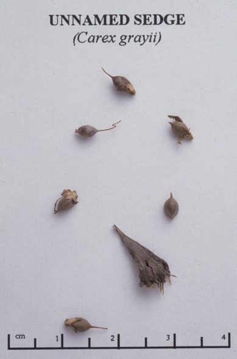

Carex grayi
Family: Cyperaceae
Common Bur Sedge
Swink/Wilhelm #7
FLOWERING: June to September
SEED TIMING: September into October
HABITAT: Wooded floodplains
DIAGNOSTIC FEATURES: 2 to 3 feet tall. Leaves form floppy clumps from which stalks with large, round spikelets emerge. The spikelets, with more than a dozen rotund and wedge-bottomed perigynia each, are distinctive.
TO PICK: Take entire spikelet when perigynia look dried out and grayish-brown. The weight of the spikelet will often cause it to droop to the ground so check under the leaves of the plant to see if there are any hidden from sight.